1Marketing SQL Lab이란?
무엇을 할 수 있나
- 대시보드 — 기간 · 병원을 골라 광고비, 귀속 매출, 문의 · 예약 · 내원 · 결제 수와 월별 추이를 봅니다.
- 준비한 질문 12개 — 마케팅 실무에서 자주 묻는 질문을 SQL로 실행하고, 미리 계산해 둔 값과 맞는지 ✓ 표시로 확인합니다.
- 직접 묻기 — SQL을 직접 쓰거나, 도우미에서 항목을 골라 SQL을 만들거나(AI 없이), 문장으로 물어 AI가 SQL 초안을 쓰게 합니다.
- 내 파일로 — 같은 형식의 엑셀 · CSV를 넣으면 같은 질문과 대시보드가 그 파일 기준으로 다시 계산됩니다.
- 분석 스크랩북 — 중요한 결과를 저장하고, 분류하고, 보고용 문장으로 복사합니다.
들어 있는 데이터
병의원 12곳 · 2025년 1월 1일 ~ 6월 30일. 표는 6개이고, 표마다 «한 줄이 무엇인지»가 다릅니다.
| 표 | 한 줄 = | 행 수 | 담긴 것 |
|---|---|---|---|
hospitals | 병원 1곳 | 12 | 병원 기본 정보, 월간 목표 |
campaigns | 캠페인 1개 | 122 | 병원별 마케팅 캠페인 · 채널 |
marketing_daily | 캠페인 × 날짜 | 11,405 | 일별 광고비 · 노출 · 클릭 · 문의 · 예약 · 내원 · 결제 · 귀속 매출 |
inquiries | 문의 1건 | 11,210 | 문의 채널 · 응답 시간 |
reservations | 예약 1건 | 4,688 | 예약 · 내원 · 노쇼 · 취소 |
payments | 결제 1건 | 2,608 | 결제 금액 · 시술 |
«한 줄»이 다른 표를 그대로 이어 붙이면(JOIN) 행이 늘어나 합계가 부풀 수 있습니다. 이 앱의 질문들은 먼저 같은 단위로 묶은(집계한) 뒤에 붙입니다. 직접 SQL을 쓸 때도 같은 원칙을 따르세요.
2시작 전에 알아 둘 것
- 준비물 — 인터넷이 되는 컴퓨터와 Chrome 같은 최신 브라우저. 회원가입 · 로그인은 없습니다.
- SQL을 몰라도 대시보드와 준비한 질문은 버튼만 눌러 쓸 수 있습니다. 내 질문은 «SQL 만들기 도우미»에서 항목만 골라 SQL을 만들 수 있습니다(⑥, AI 없이).
- 실행되는 SQL은 «읽기»만 —
SELECT또는WITH로 시작하는 한 문장만 실행합니다. 데이터를 바꾸거나 지우는 명령은 실행하지 않습니다. - 숫자 해석 — 문의 · 예약 · 내원 · 결제는 이벤트 수(고유 환자 수 아님)입니다. 인과 관계(무엇 때문에 늘었는지)는 이 데이터만으로 증명할 수 없습니다. 질문마다 «해석 시 주의» 상자를 함께 읽으세요.
2026-11-21에 Windows의 Chrome(PC 화면과 Chrome의 390px 휴대폰 크기 화면)에서 확인했습니다. Edge · Safari · Firefox, Mac, 실제 휴대폰 기기에서는 직접 시험하지 않았습니다.
3접속과 화면 구성
- 주소 https://marketing-sql-lab.vercel.app 를 엽니다.
- 로고 아래 상태 줄이 «준비됨»(초록 점)이 되면 쓸 수 있습니다. 처음에는 데이터 엔진과 표를 받느라 몇 초 걸립니다.
- 처음 화면은 대시보드입니다. 아래로 내리면 준비한 질문이 이어집니다.
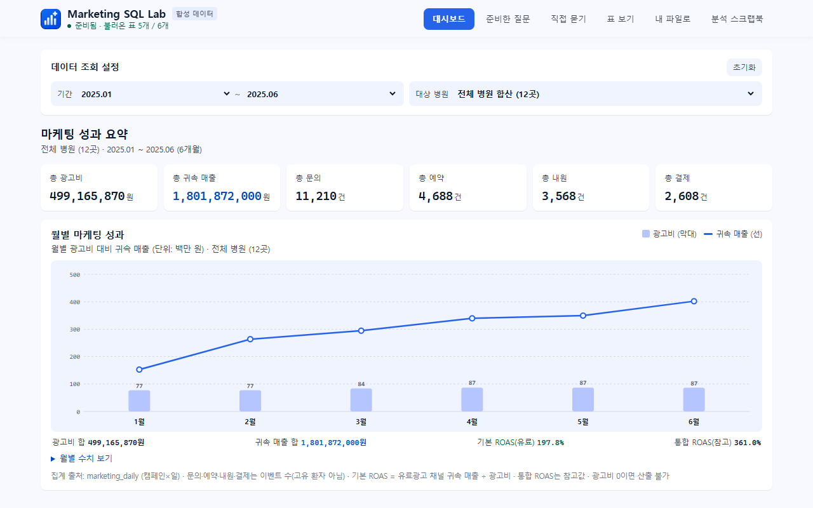
| 메뉴 | 하는 일 | 가이드 |
|---|---|---|
| 대시보드 | 기간 · 병원별 성과 요약과 월별 차트 (아래에 준비한 질문도 함께) | ④ |
| 준비한 질문 | 질문 12개를 SQL로 실행하고 확인값과 대조 | ⑤ |
| 직접 묻기 | SQL을 직접 쓰거나, 도우미로 항목을 골라 만들거나(AI 없이), 문장으로 물어 AI가 쓰게 함 | ⑥ ⑦ |
| 표 보기 | 표 6개의 칸 · 뜻 · 주의할 점, 샘플 5행 | ⑧ |
| 내 파일로 | 내 엑셀 · CSV를 넣어 같은 분석을 그 파일로 | ⑨ |
| 분석 스크랩북 | 저장한 분석 결과 모음 · 보고용 복사 · 백업 | ⑩ |
휴대폰에서
메뉴 6개가 두 줄(3×2)로 모두 보입니다. 휴대폰에서는 화면을 가리지 않도록 위쪽 메뉴가 따라 내려오지 않으니, 다른 메뉴로 갈 때는 화면 맨 위로 올라가세요.
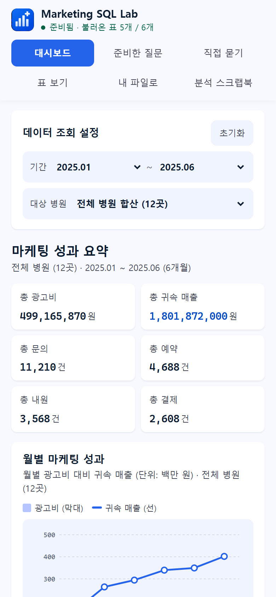
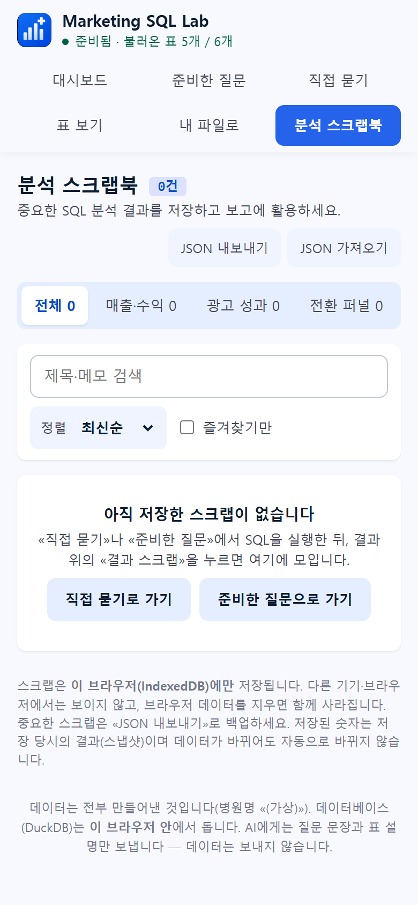
4대시보드
조회 설정
- 기간 — 시작 월과 끝 월을 고릅니다. 시작이 끝보다 늦어지면 자동으로 맞춰 줍니다.
- 대상 병원 — 전체 합산 또는 병원 한 곳.
- 초기화 — 전체 병원 · 6개월로 되돌립니다.
조회 설정은 대시보드에만 적용됩니다. 준비한 질문의 SQL과 확인값은 바뀌지 않습니다.
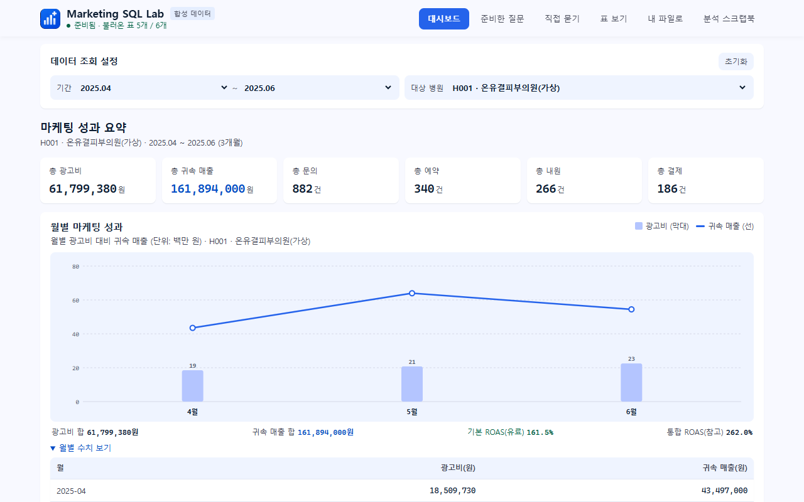
성과 요약 카드 6개
총 광고비 · 총 귀속 매출 · 총 문의 · 총 예약 · 총 내원 · 총 결제. 전체 6개월 기준으로 광고비 499,165,870원, 귀속 매출 1,801,872,000원입니다.
월별 차트와 ROAS
- 막대 = 월별 광고비, 선 = 월별 귀속 매출 (단위: 백만 원). 막대 위 숫자가 그 달 광고비입니다.
- 기본 ROAS(유료) = 유료광고 채널의 귀속 매출 ÷ 광고비. 성과 판단에는 이 값을 씁니다. 전체 6개월 197.8%.
- 통합 ROAS(참고) = 모든 채널 귀속 매출 ÷ 광고비. 광고비가 들지 않는 채널의 매출까지 포함되므로 참고값입니다. 전체 361.0%.
- 광고비가 0원이면 ROAS는 «산출 불가»로 표시합니다(0으로 나누지 않음).
- ▶ 월별 수치 보기를 누르면 차트의 숫자를 표로 봅니다.
5준비한 질문
질문 주제 10개를 12개 SQL로 준비했습니다(같은 주제를 기준만 바꿔 A/B 두 가지로 보는 질문 2개 포함). 분석 단계별로 나뉩니다 — 현황 4 · 비교 3 · 원인 탐색 3 · 처방 2.
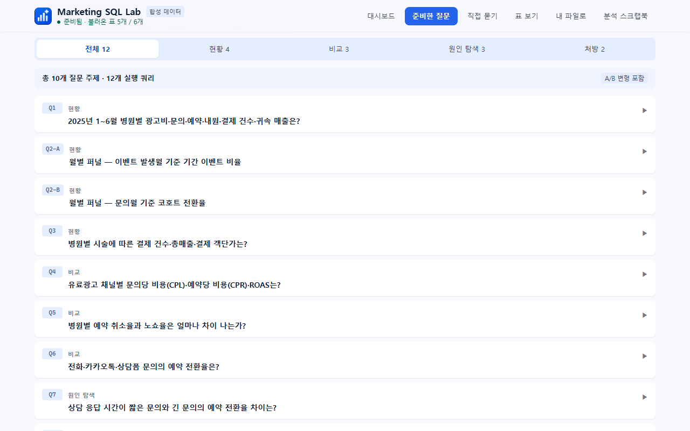
질문 하나 실행하기
- 질문 제목을 누르면 펼쳐집니다. 질문 설명, 단위 · 분모 · 사용 표 · 예상 행 수, 해석 시 주의, SQL이 보입니다.
- SQL 실행을 누릅니다. 결과 표(와 막대)가 아래에 나옵니다.
- 결과 아래 초록 ✓ 표시는 미리 따로 계산해 둔 값과 일치한다는 뜻입니다. 빨간 ✕는 다르다는 뜻입니다.
- SQL을 조금 바꿔 보고 싶으면 고쳐서 묻기 — 그 SQL이 «직접 묻기» 편집기로 옮겨집니다.
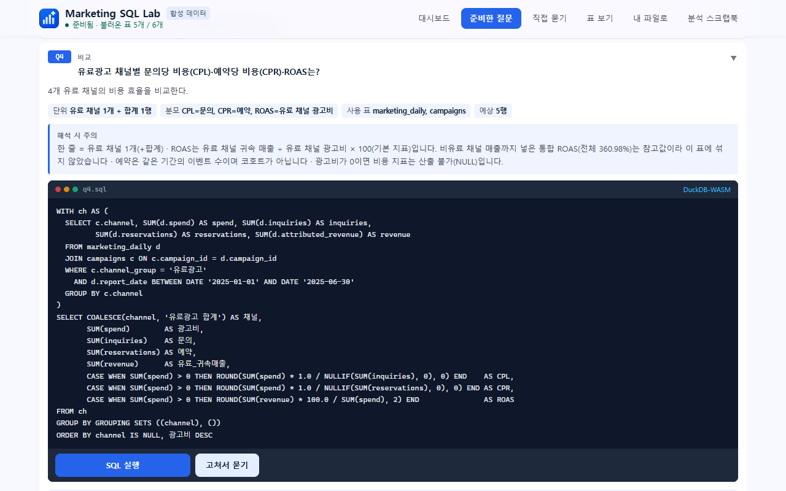
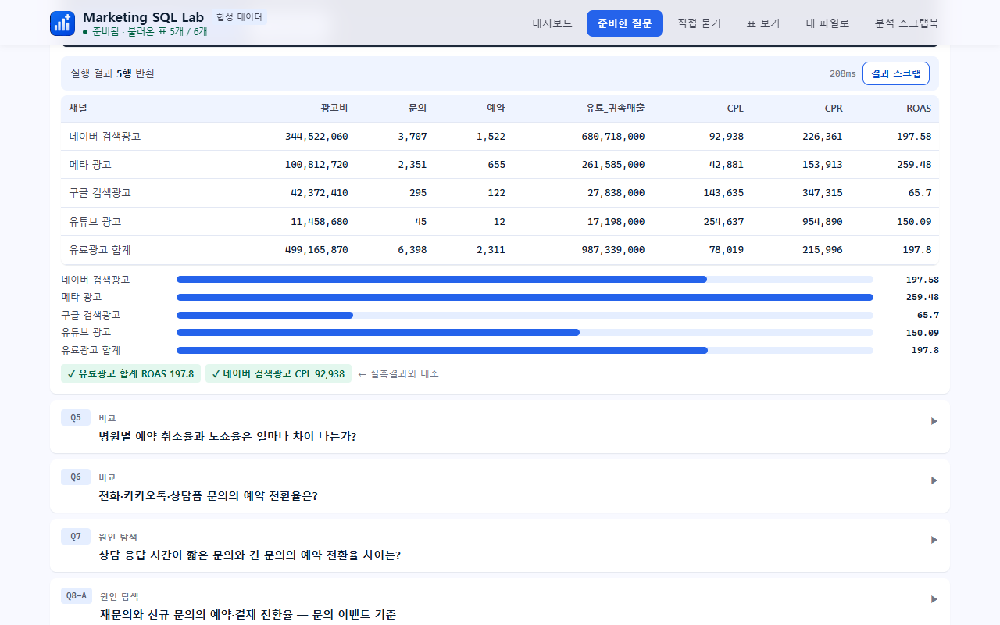
Q9 · Q10은 «이렇게 하면 좋아지는가?»를 묻지만, 이 데이터로는 인과 효과를 검증할 수 없습니다. 관찰된 차이만 보여 주므로 왼쪽에 빨간 선이 있는 «인과 검증 유의사항» 상자로 표시합니다.
6직접 묻기 — SQL 쓰기
SQL을 얻는 방법은 세 가지입니다. ① 직접 쓰기, ② SQL 만들기 도우미로 항목을 골라 만들기(AI 없이), ③ 문장으로 물어 AI에게 받기(⑦). 어느 방법이든 실행은 같은 검은 편집기에서 합니다.
SQL 만들기 도우미 (AI 없이)
SQL을 몰라도 항목을 고르면 정해진 규칙으로 SQL이 써집니다. AI를 부르지 않으므로 같은 선택이면 언제나 같은 SQL이 나오고, AI 오류나 사용량 한도와 상관없이 씁니다.
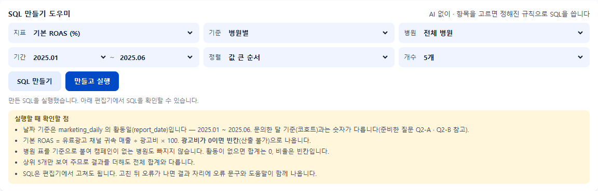
- 지표 — 광고비 합계 · 귀속 매출 합계 · 문의 / 예약 / 내원 / 결제 수 · 클릭 수 · 기본 ROAS · CPL · CPR 중 하나.
- 기준 — 전체 합계 · 병원별 · 월별 · 채널별 · 채널 그룹별 · 진료 유형별 중 하나. 병원(전체 또는 한 곳)과 기간(월)을 고릅니다.
- 정렬(값 큰 순서 · 작은 순서 · 기준 순서)과 개수(전체 · 5 · 10). «전체 합계»는 한 줄이라 이 둘은 꺼집니다.
- SQL 만들기는 편집기에 SQL을 넣기만 합니다. 읽어 보고 SQL 실행을 누르세요. 만들고 실행은 넣고 바로 실행합니다.
- 편집기에 직접 쓰던 SQL이 있으면 바꾸기 전에 한 번 묻습니다.
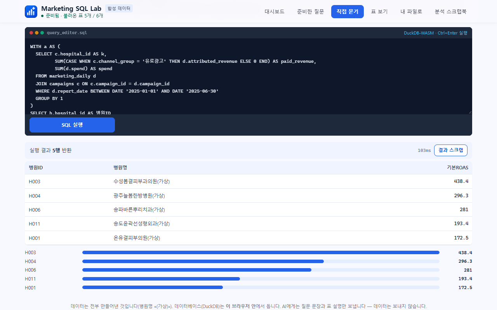
- 일별 표(marketing_daily)를 먼저 묶은 뒤 다른 표에 붙입니다. 행이 늘어 합계가 부푸는 일을 막습니다.
- «병원별»은 병원 표를 기준으로 붙여, 캠페인이 없는 병원도 빠지지 않습니다(합계 0, 비율은 빈칸).
- 기본 ROAS · CPL · CPR은 대시보드 · 준비한 질문과 같은 기준입니다. 분모가 0이면 0으로 나누지 않고 빈칸(산출 불가)으로 둡니다.
- 날짜는 활동일(report_date) 기준입니다. 문의한 달 기준(코호트) 숫자와는 다릅니다.
확인: 도우미로 만든 «전체 기본 ROAS 197.8» · «채널별 CPL — 네이버 검색광고 92,938» · «병원별 광고비 합 499,165,870»이 대시보드 · 준비한 질문의 값과 같았습니다(2026-11-21).
정해 둔 조합만 만듭니다. 문의 · 예약 · 결제 상세 표(inquiries · reservations · payments)를 쓰는 분석, 두 지표를 한 번에 보는 표는 직접 SQL을 쓰거나 준비한 질문을 고쳐서 쓰세요.
SQL 직접 쓰기
- 메뉴에서 직접 묻기를 누릅니다.
- 표 이름 버튼(
hospitals·campaigns…)을 누르면 그 표를 20행 미리 보는 SQL이 편집기에 들어갑니다. 실행은 직접 누릅니다. - 검은 편집기에 SQL을 쓰고 SQL 실행 또는 Ctrl+Enter (Mac: ⌘+Enter).
- 결과 위에 «실행 결과 N행 반환»과 걸린 시간이 나옵니다. 화면에는 처음 50행까지 보이고, 첫 열이 글자 · 마지막 열이 숫자인 20행 이하 결과는 막대도 함께 나옵니다.
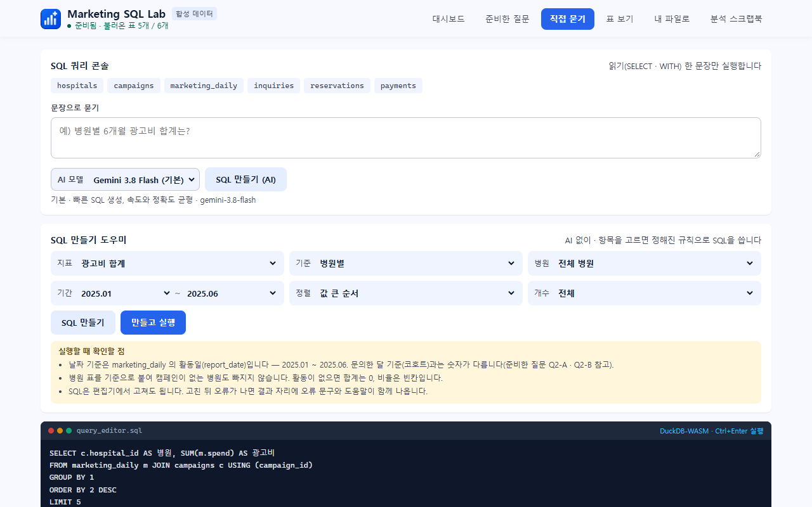
예로 쓴 SQL — campaigns는 «캠페인 1개 = 병원 1곳»이라 marketing_daily에 붙여도 행이 늘지 않습니다.
SELECT c.hospital_id AS 병원, SUM(m.spend) AS 광고비
FROM marketing_daily m JOIN campaigns c USING (campaign_id)
GROUP BY 1
ORDER BY 2 DESC
LIMIT 5DROP · UPDATE · CREATE 같은 바꾸는 명령, 세미콜론(;)으로 이은 여러 문장은 «읽기(SELECT · WITH)만 실행합니다» 안내와 함께 실행하지 않습니다.
오류가 나면 — 도움말
SQL에 문제가 있으면 결과 자리에 데이터베이스의 오류 문구(영어)가 빨간 상자로 나오고, 그 아래에 한국어 도움말이 한 줄 붙습니다.
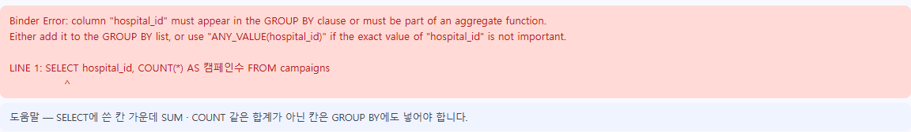
| 오류 문구에 이런 말이 있으면 | 뜻 · 고치는 방법 |
|---|---|
Table with name … does not exist | 없는 표 이름. 표는 6개입니다(«표 보기»). |
Referenced column … not found | 틀린 칸 이름. «표 보기»에서 확인합니다. 내 파일이면 머리글이 원래 표와 같은지 봅니다. |
must appear in the GROUP BY clause | SELECT의 칸 중 SUM · COUNT가 아닌 칸은 GROUP BY에도 넣습니다. |
Ambiguous reference | 같은 이름의 칸이 두 표에 있음. c.hospital_id처럼 표 별칭을 붙입니다. |
Parser Error · syntax error | 문법 오류. 쉼표 · 괄호 · 작은따옴표 짝과 명령어 철자를 봅니다. |
Conversion Error | 형식이 맞지 않음. 날짜는 DATE '2025-01-01', 글자는 작은따옴표로 감쌉니다. |
7문장으로 묻기 (AI)
도우미(⑥)에 없는 질문이면 문장으로 적고 AI(Google Gemini)에게 SQL 초안을 받을 수 있습니다. AI는 SQL을 쓰기만 하고, 실행은 사람이 버튼으로 합니다.
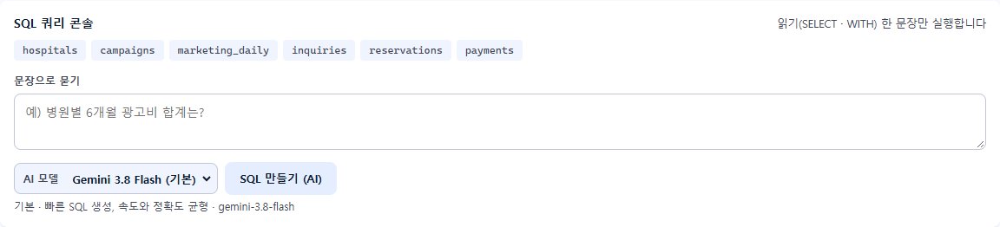
- «문장으로 묻기» 칸에 질문을 씁니다. 예) 병원별 6개월 광고비 합계는? (최대 300자)
- AI 모델을 고릅니다. 고른 모델은 이 브라우저가 기억합니다.
- SQL 만들기 (AI)를 누르면, AI가 쓴 SQL이 아래 편집기에 들어가고 «무엇을 어떻게 셌는지» 한 문장이 함께 나옵니다.
- SQL을 읽어 본 뒤 SQL 실행을 누릅니다. 결과 숫자 하나는 직접 검산해 보세요.
| 모델 | 특징 |
|---|---|
| Gemini 3.8 Flash (기본) | 빠른 SQL 생성, 속도와 정확도 균형 |
| Gemini 3.6 Flash | 이전 세대 Flash · 안정 버전 |
| Gemini 3.5 Flash-Lite | 가벼운 질문 · 가장 빠르고 저렴 |
가는 것: 질문 문장, «표 보기»의 표 설명(표 · 칸 이름과 뜻), 고른 모델 이름. 데이터 값과 내가 올린 파일의 내용은 가지 않습니다. AI가 쓴 SQL도 읽기 전용 검사를 통과해야 편집기에 들어옵니다.
Gemini 3.6 Flash와 3.5 Flash-Lite는 SQL을 정상으로 만들었고, 만든 SQL의 실행 결과(문의 11,210건 · 예약 4,688건)도 맞았습니다. 기본 모델인 3.8 Flash는 확인 당시 Google 서버 오류(503)로 SQL을 받지 못했습니다. «SQL을 만들지 못했습니다» 안내가 나오면 잠시 뒤 다시 하거나 다른 모델을 고르세요.
8표 보기
SQL을 쓰기 전에 표마다 «한 줄이 무엇인지», 어떤 칸이 있는지를 보는 곳입니다.
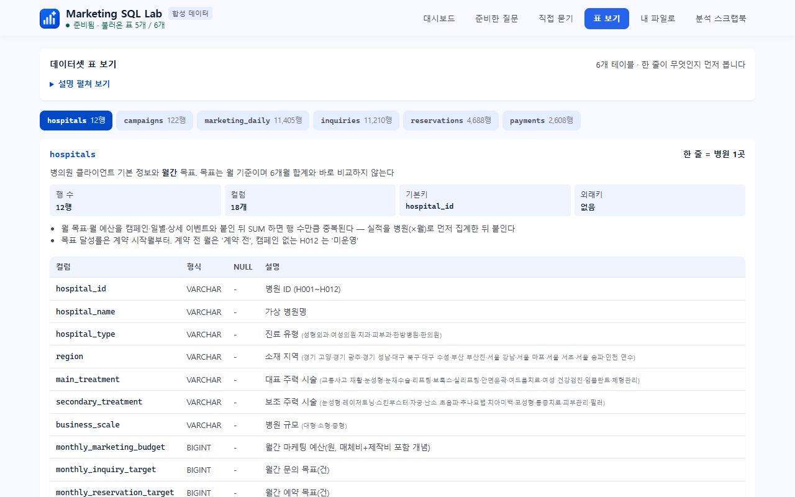
- 맨 위 «데이터셋 표 보기» 카드의 ▶ 설명 펼쳐 보기를 누르면 표 사이의 관계, ROAS 정의, 표를 붙일 때 주의할 점이 항목별로 나옵니다.
- 샘플 5행 미리보기로 실제 데이터 5행을 봅니다.
9내 파일로 분석하기
같은 형식의 엑셀(.xlsx · .xls) 또는 CSV를 넣으면, 준비한 질문 · 직접 묻기 · 대시보드가 그 파일 기준으로 다시 계산됩니다. 다음 달 파일을 넣으면 같은 질문이 다음 달 숫자를 냅니다.
파일 이름 규칙
파일 이름에 표 이름이 들어 있어야 그 표를 대신합니다. 예) inquiries_7월.xlsx → inquiries 표.
대상 표 이름: hospitals · campaigns · marketing_daily · inquiries · reservations · payments. 칸(머리글) 이름도 원래 표와 같아야 합니다. 시트가 여러 개면 첫 시트만 읽습니다.
연습용 샘플 파일 받기
원래 데이터와 같은 엑셀 파일입니다. 누르면 바로 내려받습니다.
- 6개 전체 한꺼번에 (ZIP, 약 1.5MB)
- hospitals.xlsx
- campaigns.xlsx
- marketing_daily.xlsx
- inquiries.xlsx
- reservations.xlsx
- payments.xlsx
올리는 방법
- 메뉴에서 내 파일로를 누릅니다.
- 점선 상자에 파일을 끌어다 놓거나, 상자를 눌러 고릅니다. 여러 개를 한꺼번에 넣을 수 있습니다.
- 파일마다 ✓와 «파일에서 읽은 줄 · 표에 올라간 줄»이 나옵니다. 두 숫자가 같으면 빠짐없이 올라간 것입니다.
- 원래 데이터로 돌아가려면 원래 데이터로 돌아가기 (페이지를 새로 엽니다).
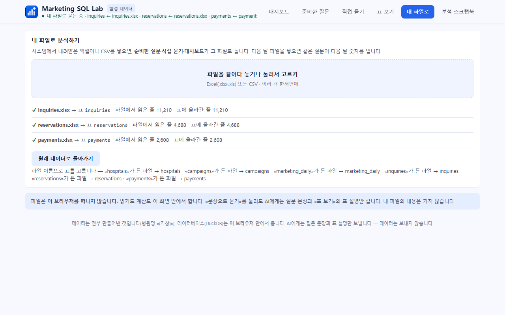
준비한 질문의 확인값은 원래 데이터 기준입니다. 내 파일을 넣은 뒤에는 ✕가 나와도 정상일 수 있으며, 결과 옆에 그 안내가 함께 나옵니다.
10분석 스크랩북
중요한 SQL 결과를 저장해 두고, 분류하고, 보고할 때 다시 꺼내 쓰는 곳입니다. 흐름은 SQL 실행 → 결과 확인 → 스크랩 저장 → 카테고리별 관리 → 보고에 활용입니다.
1) 결과 저장하기
- «직접 묻기»나 «준비한 질문»에서 SQL을 실행합니다. 실행에 성공하면 결과 위쪽 오른편에 결과 스크랩 버튼이 생깁니다. (실행에 실패한 결과는 저장할 수 없습니다.)
- 버튼을 누르면 입력 창이 열립니다. 분석 제목과 카테고리는 꼭 입력합니다.
- 핵심 결과값은 창 안의 결과 표에서 숫자 칸을 누르면 채워집니다. 직접 입력하거나 비워 둬도 됩니다.
- 필요하면 분석 대상 · 기간 · 계산 기준 · 보고용 메모(의미 / 강조할 내용 / 추가 확인) · 태그를 적고 저장.
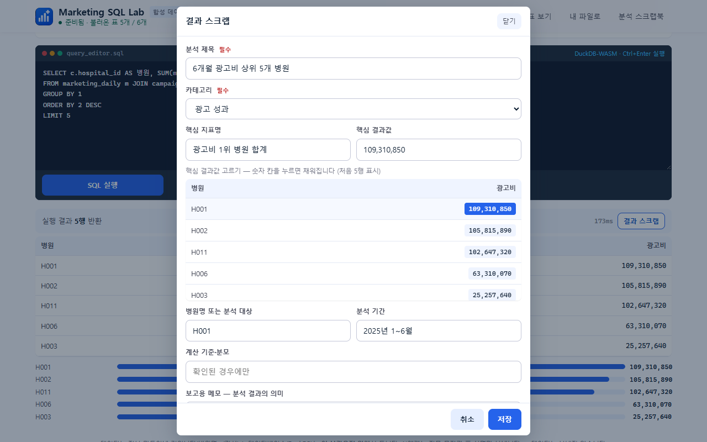
| 자동으로 함께 저장되는 것 | 저장하지 않는 것 · 추측하지 않는 것 |
|---|---|
| 실행한 SQL 원문, 결과 표(칸 이름 · 행 · 행 수), 저장 시각, 사용한 표, 데이터 범위, 내 파일을 쓴 경우 그 파일 이름 | 분석 기간 · 분모는 SQL 글자를 보고 짐작해 채우지 않습니다. 직접 적으세요. (준비한 질문은 질문에 적힌 단위 · 분모를 미리 채워 줍니다.) |
- 스냅샷 — 저장한 숫자는 저장 순간의 결과 그대로입니다. 나중에 데이터가 바뀌어도 스크랩의 숫자는 바뀌지 않습니다.
- 0행 결과는 경고와 함께 «0행 결과로 저장» 버튼으로 바뀝니다. 같은 SQL로 저장한 스크랩이 있으면 알려 주지만 별도로 저장할 수 있습니다.
- 큰 결과는 처음 500행만 저장하고, 그 사실을 저장 전에 알려 줍니다.
2) 목록에서 찾기 · 관리하기
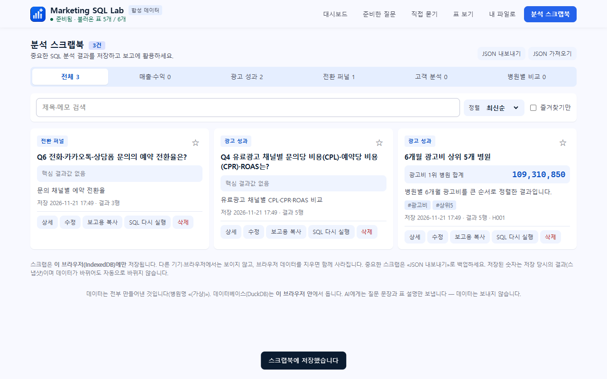
- 카테고리 탭 — 전체 · 매출·수익 · 광고 성과 · 전환 퍼널 · 고객 분석 · 병원별 비교. 탭마다 개수가 나옵니다.
- 검색(제목 · 메모), 정렬(최신순 · 오래된순 · 제목순), ☆ 즐겨찾기와 «즐겨찾기만».
- 카드 버튼: 상세 수정 보고용 복사 SQL 다시 실행 삭제. 삭제는 한 번 더 묻고, 되돌릴 수 없습니다.
- 수정에서는 제목 · 카테고리 · 메모 등을 바꿀 수 있습니다. SQL과 저장된 결과는 바뀌지 않습니다.
3) 상세 보기
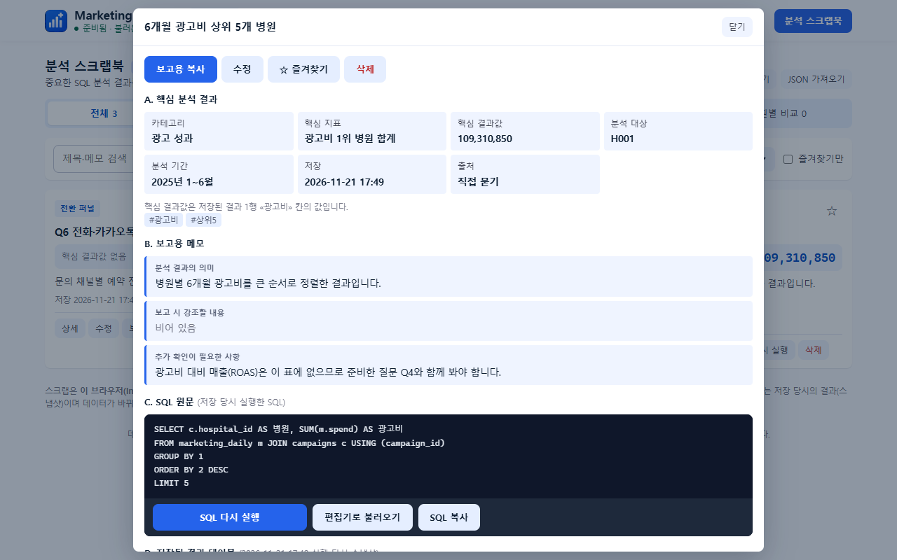
4) SQL 다시 실행 · 결과 비교
- 편집기로 불러오기 — 스크랩의 SQL을 «직접 묻기» 편집기에 넣기만 합니다. 실행은 직접 누릅니다.
- SQL 다시 실행 — 불러온 뒤 바로 실행합니다.
- 편집기에 쓰던 SQL이 있으면 덮어쓰기 전에 묻습니다.
- 실행한 결과 위에는 «새로 실행한 결과»라고 표시되고, 저장된 결과와 같은지 · 다른지가 나옵니다.
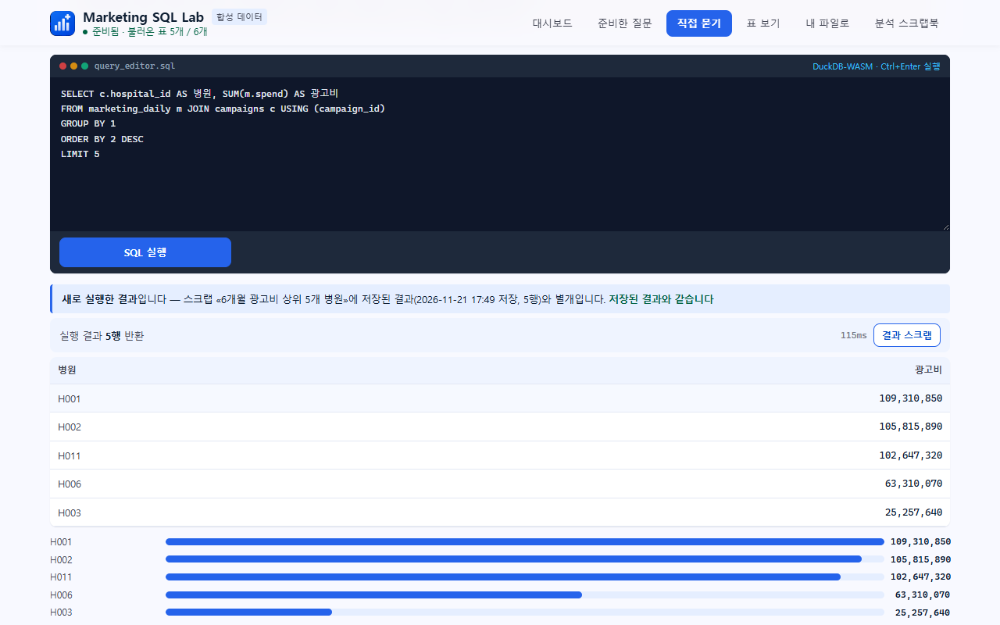
5) 보고용 복사
보고용 복사를 누르면 저장한 실제 값으로 만든 문장이 클립보드에 복사됩니다. 비어 있는 항목은 줄을 넣지 않습니다. 위 예에서 복사된 내용:
[6개월 광고비 상위 5개 병원]
- 분석 대상: H001
- 분석 기간: 2025년 1~6월
- 핵심 지표: 광고비 1위 병원 합계
- 분석 결과: 109,310,850
- 분석 내용: 병원별 6개월 광고비를 큰 순서로 정렬한 결과입니다.
- 추가 확인: 광고비 대비 매출(ROAS)은 이 표에 없으므로 준비한 질문 Q4와 함께 봐야 합니다.
- 근거: SQL 실행 결과 5행 (2026-11-21 17:49 저장 스냅샷) · 병의원 마케팅 합성 데이터 (parquet 6개 표) · 데이터 범위 2025-01 ~ 2025-066) 백업 — JSON 내보내기 · 가져오기
서버에 올라가지 않습니다(브라우저의 IndexedDB). 다른 기기 · 다른 브라우저에서는 보이지 않고, 브라우저의 사이트 데이터를 지우면 함께 사라집니다. 중요한 스크랩은 백업해 두세요.
- JSON 내보내기 — 전체 스크랩을
marketing-sql-lab-scrapbook-날짜-시각.json파일로 저장합니다. - JSON 가져오기 — 파일을 고르면 먼저 형식을 검사하고 «새 스크랩 N건 · 이미 있는 스크랩 N건 · 형식 오류 N건»을 보여 줍니다. 이미 있는 스크랩은 기존 유지(기본) 또는 덮어쓰기 중에 고릅니다.
- 형식이 틀린 파일은 거부하고, 기존 스크랩은 그대로 둡니다.
11데이터는 어디로 가나
인터넷에서 받아 오는 것
- 화면 파일 · 합성 데이터 표(parquet) —
marketing-sql-lab.vercel.app - 데이터 엔진 DuckDB-WASM — jsdelivr CDN
밖으로 보내는 것 (AI를 쓸 때만)
- «SQL 만들기 (AI)»를 누를 때: 질문 문장 · 표 설명 · 모델 이름 → 이 사이트의 서버 함수 → Google Gemini
내 브라우저 안에서만 처리하는 것
- SQL 실행과 모든 계산
- «내 파일로»에 넣은 엑셀 · CSV의 내용
- 분석 스크랩북 (IndexedDB)
AI 키는 서버에만 있고 브라우저로 내려오지 않습니다.
직접 확인하는 방법 (Chrome, 1분)
- F12로 개발자 도구를 열고 Network 탭에서 🚫로 기록을 지웁니다.
- SQL을 실행하거나, 내 파일을 올리거나, 스크랩을 저장해 봅니다.
- 보내는(POST) 요청이 없으면 내용이 밖으로 나가지 않은 것입니다. POST는 «SQL 만들기 (AI)»를 누를 때
api/sql로 1건만 생깁니다.
현재 코드와 2026-11-21 확인 결과에 대한 설명입니다. 사용하는 컴퓨터 · 브라우저 확장 프로그램 · 회사 네트워크까지 보장하지는 않습니다. 실제 고객 데이터를 다룰 때는 소속 기관의 보안 규정을 먼저 따르세요.
12자주 발생하는 문제
| 상황 / 화면 문구 | 원인 | 해 볼 것 |
|---|---|---|
| 접속하면 «Vercel Security Checkpoint» 같은 확인 화면이 뜸 | 호스팅(Vercel)의 자동 보안 확인 | 잠시 기다린 뒤 새로 고칩니다. 짧은 시간에 여러 번 새로 고치면 더 오래 막힐 수 있습니다. 미검증 일반 브라우저에서 이 화면이 뜨는 경우는 직접 겪어 보지 않았습니다. |
| «데이터 엔진을 불러오지 못했습니다 — 인터넷 연결을 확인하십시오» | DuckDB 엔진(jsdelivr)을 받지 못함 | 인터넷 연결을 확인하고 새로 고칩니다. 회사 네트워크가 CDN을 막는 경우도 있습니다. 미검증 |
| «읽기(SELECT · WITH)만 실행합니다…» | 바꾸는 명령이 있거나 문장이 여러 개 | ⑥의 규칙대로 SELECT / WITH 한 문장으로 고칩니다. |
| «AI 질문 변환 기능은 현재 비활성화되어 있습니다…» | AI 서버 함수가 없는 환경 (예: 부록 A처럼 내 컴퓨터에서 실행) | 준비한 질문이나 직접 SQL을 씁니다. |
| «… 사용량 한도를 넘었습니다» / «… 서버 오류입니다 (HTTP 503)» / «… 모델을 지금 사용할 수 없습니다» | Gemini 쪽 한도 · 일시 오류 | 잠시 뒤 다시 하거나 다른 모델을 고릅니다. 도우미(⑥)로 만들 수 있는 질문이면 AI 없이 만듭니다. |
| 빨간 오류 상자 + «도움말 — …» | SQL의 표 · 칸 이름, 문법, 묶기(GROUP BY) 문제 | ⑥ «오류가 나면 — 도움말» 표를 봅니다. |
| 도우미 결과에 빈칸이 있음 | 분모가 0이라 비율을 낼 수 없음(산출 불가) — 정상 | 예: 광고비 0인 병원의 ROAS, 유료광고가 아닌 채널의 CPL. |
| «이 파일에 맞는 표가 없습니다» | 파일 이름에 표 이름이 없음 | ⑨의 규칙대로 파일 이름에 표 이름을 넣습니다. |
| 업로드 결과가 ✕ (읽은 줄 ≠ 올라간 줄) | 빈 줄 · 머리글 문제 등으로 일부가 올라가지 않음 | 첫 시트 1행이 머리글인지, 중간에 빈 줄 · 합계 줄이 없는지 확인합니다. |
| «결과 스크랩» 버튼이 안 보임 | 실행이 실패했거나 아직 실행 전 | SQL을 실행해 결과 표가 나온 뒤에 생깁니다. |
| «스크랩북 저장소를 열 수 없습니다» / 저장 시 «저장소(IndexedDB)를 쓸 수 없어…» | 사생활 보호(시크릿) 모드나 사이트 데이터 차단 | 일반 창에서 열거나, 브라우저의 사이트 데이터 허용을 확인합니다. |
| «브라우저 저장 공간이 부족해 저장하지 못했습니다» | 저장 공간 부족 | 필요 없는 스크랩을 지우거나 JSON으로 백업한 뒤 정리합니다. |
| 스크랩이 사라짐 | 다른 브라우저 · 기기이거나, 사이트 데이터가 지워짐 | JSON 백업 파일이 있으면 «JSON 가져오기»로 되돌립니다. |
| 바뀐 내용이 안 보이고 예전 화면 그대로임 | 브라우저가 예전 파일을 기억함 | Ctrl+Shift+R (Mac: ⌘+Shift+R)로 새로 고칩니다. |
| 휴대폰에서 메뉴가 안 보임 | 휴대폰에서는 메뉴가 위에 고정되지 않음 | 화면 맨 위로 올라갑니다. |
A부록 A. 내 컴퓨터에서 실행하기
인터넷 주소를 쓸 수 없을 때만 따라 하세요. Windows 기준입니다. 2026-11-21에 GitHub 저장소의 main 내용 + Python 3.13 + Chrome으로 아래 서버 실행과 접속을 확인했습니다(대시보드 · SQL 실행 정상, AI는 비활성 안내).
Mac에서는 시험하지 않았습니다(python 대신 python3가 필요할 수 있음). GitHub의 Download ZIP 버튼을 눌러 받는 과정은 같은 내용을 다른 방법으로 꺼내 확인했습니다.
- ZIP 받기 — github.com/cjy3363-art/marketing-sql-lab 에서 초록색 <> Code → Download ZIP.
- 압축 풀기 —
marketing-sql-lab-main.zip에 마우스 오른쪽 → 모두 압축 풀기.index.html이 들어 있는marketing-sql-lab-main폴더가 생깁니다. - Python 확인 — Windows 키 →
cmd→ Enter,python --version.Python 3.으로 시작하면 됩니다. 없으면 python.org에서 설치하고 Add python.exe to PATH에 체크합니다. 설치 과정은 다시 시험하지 않음 - 폴더에서 검은 창 열기 — 탐색기로
marketing-sql-lab-main폴더를 열고, 주소 줄에cmd입력 → Enter. - 서버 실행
python -m http.server 8000 --bind 127.0.0.1이렇게 나오면 성공Serving HTTP on 127.0.0.1 port 8000 …. 쓰는 동안 검은 창을 닫지 마세요.127.0.0.1은 내 컴퓨터에서만 열린다는 뜻입니다. - 접속 — Chrome에서
http://127.0.0.1:8000(https가 아니라 http). 8000번이 사용 중이면 명령과 주소의 8000을 8001로 바꿉니다. - 종료 — 검은 창에서 Ctrl+C.
내 컴퓨터 실행에서는 AI 서버 함수가 없어 «문장으로 묻기»가 비활성 안내로 나옵니다. 나머지 기능은 같습니다.
↑ 맨 위로B부록 B. 용어 풀이
| 용어 | 뜻 |
|---|---|
| SQL | 표에서 필요한 숫자를 꺼내는 질의 언어. 이 앱에서는 읽기(SELECT · WITH)만 씁니다. |
| 한 줄 (grain) | 표의 한 행이 무엇 하나를 뜻하는지. 예) marketing_daily 한 줄 = 캠페인 하나의 하루. |
| JOIN | 두 표를 같은 칸(예: campaign_id) 기준으로 이어 붙이기. 한 줄의 단위가 다르면 행이 늘어 합계가 부풀 수 있습니다. |
| 귀속 매출 | 캠페인 성과로 연결(귀속)된 매출. |
| ROAS | 광고비 대비 매출 비율 = 귀속 매출 ÷ 광고비 × 100. 기본 ROAS는 유료광고 채널만, 통합 ROAS는 모든 채널(참고값). |
| CPL · CPR | 문의 1건당 광고비(Cost Per Lead) · 예약 1건당 광고비(Cost Per Reservation). |
| 코호트 | 같은 시점(예: 문의한 달)에 시작한 묶음. «문의월 기준 코호트 전환율»은 그 달 문의가 나중에 예약 · 결제로 이어진 비율. |
| 노쇼율 | 예약하고 오지 않은 비율. 이 앱은 결과가 확정된 예약을 분모로 씁니다. |
| 스냅샷 | 저장 순간의 결과를 그대로 보관한 것. 데이터가 바뀌어도 바뀌지 않습니다. |
| IndexedDB | 브라우저 안에 데이터를 저장하는 공간. 스크랩북이 여기에 저장됩니다. |
| 합성 데이터 | 실제 기록이 아니라 규칙으로 만들어 낸 데이터. 이 앱의 병원 · 숫자는 모두 가상입니다. |